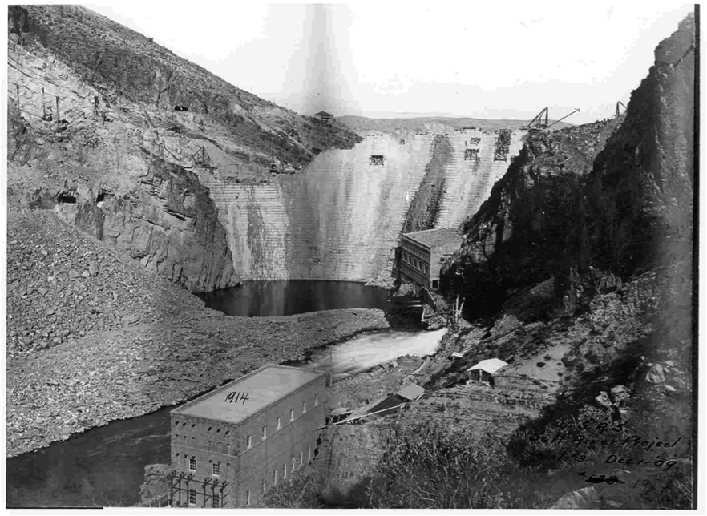

Construction begins in 1903 and is completed by 1911. One of the first irrigation projects created by the Bureau of Reclamation formed in 1902.
Theodore Roosevelt Dam Under Construction, Transformer House in Foreground, 1909.
Retrieved from http://www.usbr.gov/cultural/arizona.html on Tuesday, November 6, 2012.